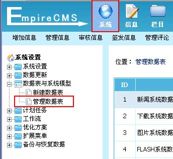
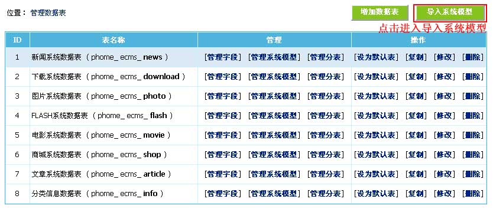
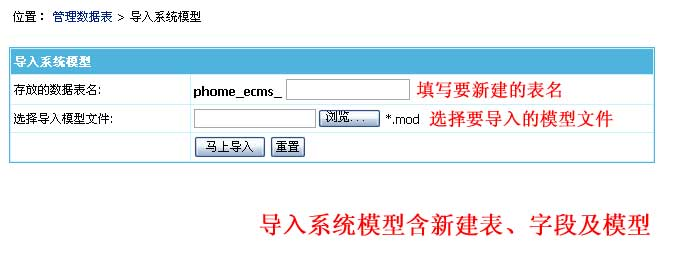
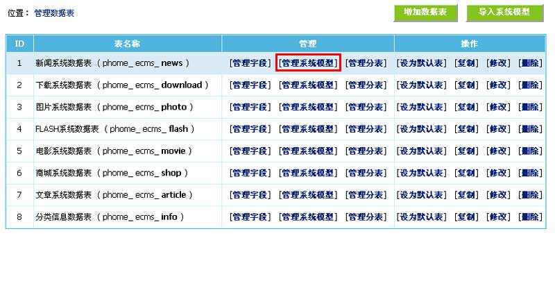
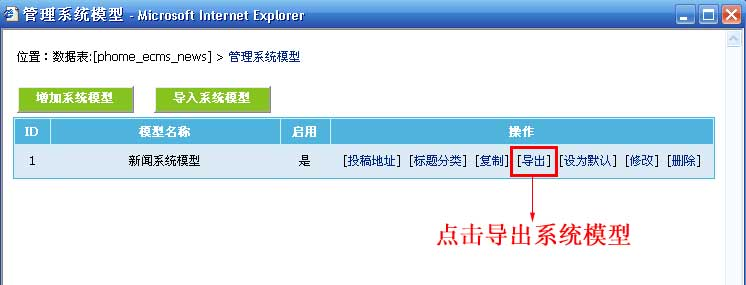
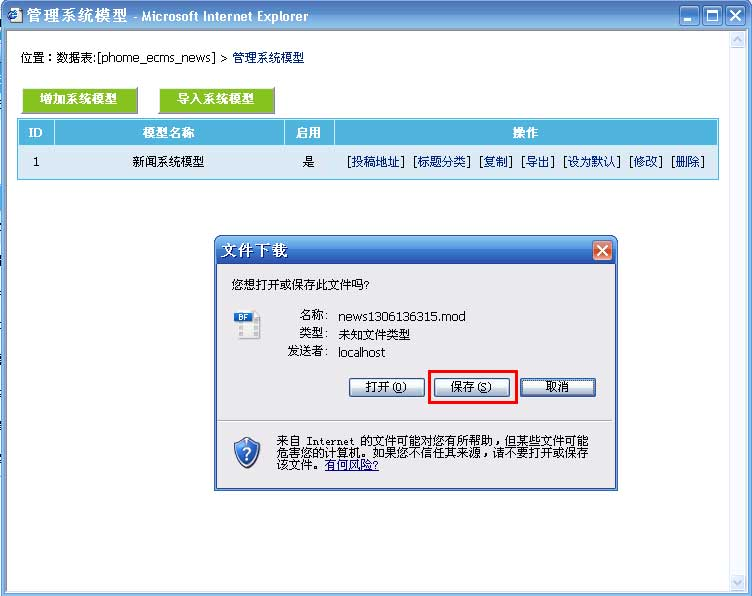
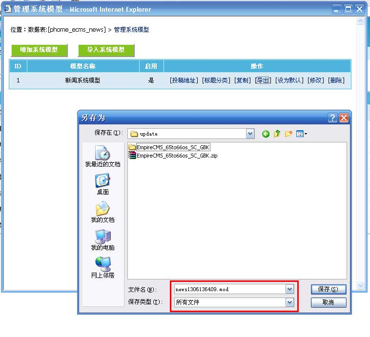

| 导入系统模型：导入下载的系统模型。 导出系统模型：方便大家分享自己的系统模型。 |
|
||
| 导入系统模型： | ||||
| 1、登录后台，单击“系统”菜单，选择“管理数据表”子菜单，进入管理数据表界面： | ||||
|  | ||||
| 2、进入管理数据表界面：(蓝色背景为默认表) | ||||
|  | ||||
| 3、点击“导入系统模型”按钮进入导入系统模型界面： | ||||
|  | ||||
|
||||
| 4、设置后点击“马上导入”按钮就能导入成功。 |
| 导出系统模型： |
| 1、登录后台，单击“系统”菜单，选择“管理数据表”子菜单，进入管理数据表界面： |
| 2、进入管理数据表界面：(蓝色背景为默认表) |
|  |
| 3、点击“新闻系统数据表”的“管理系统模型”进入管理系统模型界面： |
|  |
| 4、点击“新闻系统模型”的“导出”就能导出.mod文件。 |
|  |
|  |
| 5、保存导出.mod文件即可。 |
| 相关链接 |
| 1、帝国CMS功能解密之：模型之间的字段关联 |
| 2、帝国CMS功能解密之：内容存文本 |
| 3、帝国CMS功能解密之：自定义系统模型 |
| 4、帝国CMS功能解密之：系统模型结合项 |
| 5、帝国CMS功能解密之：字段处理函数 |
| 6、帝国CMS功能解密之：系统关键字字段 |